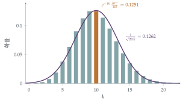

STEP II 2016, 문제 13
계속 읽기 전에 문제를 먼저 읽어 보자. 문제는 STEP Support Programme의 문제 데이터베이스에 있다: step.maths.org/questions/16-s2-q13
도입
\(100!\)은 얼마나 큰 수일까? 직접 곱해 보면 시간이 꽤 걸리는데, 이 수는 \(158\)자리이다. 스털링 공식(Stirling’s formula) \(n! \approx \sqrt{2\pi n}\,(n/e)^n\)을 쓰면 단 한 줄로 오차 \(0.1\%\) 이내의 값을 얻는다. 이것은 수학에서 가장 유용한 근사(approximation) 가운데 하나로, 확률론, 통계물리학, 알고리즘 분석에서 늘 쓰인다.
이 공식의 증명은 여러 가지가 있는데, 적분을 이용하는 방법(4.4 절)이나 오일러-매클로린 공식(Euler–Maclaurin formula)을 이용하는 방법이 있다. 이 문제는 그중 가장 놀라운 증명, 즉 확률을 이용한 증명을 보여 준다. 평균이 \(n\)인 푸아송 분포(Poisson distribution)는 근사적으로 정규분포(normal distribution)를 따르고, 봉우리에서 두 분포를 비교하면 \(n!\)의 값이 저절로 정해진다. 스털링 공식에 나오는 \(\sqrt{2\pi}\)는 말 그대로 정규분포의 확률밀도(density)에 나오는 바로 그 \(\sqrt{2\pi}\)이다.
시작하기 전에
평균이 \(\mu\)이고 분산이 \(\sigma^2\)인 이산 확률변수(discrete random variable) \(X\)가 근사적으로 정규분포를 따른다면, \(\mathrm{P}(X = \mu)\)는 대략 얼마일까? (\(\mu\)를 중심으로 하는 폭 \(1\)인 구간의 확률을 생각해 보자.)
정규근사(normal approximation)에서 \(\mathrm{P}(X = \mu) \approx \mathrm{P}(\mu - \frac12 < X < \mu + \frac12)\)이고, 이는 대략 폭 \(1\)에 봉우리에서의 확률밀도를 곱한 값, 곧 \(\frac{1}{\sigma\sqrt{2\pi}}\)이다.
차근차근 풀기
단계 1 동전 열여섯 개
\(X \sim \mathrm{B}(16, \frac12)\)의 평균(mean)은 \(8\)이고 분산(variance)은 \(16 \cdot \frac12 \cdot \frac12 = 4\)이므로 \(\sigma = 2\)이다. 정규근사에 의해 \[\mathrm{P}(X = 8) \approx \frac{1}{2\sqrt{2\pi}} \approx 0.1995.\] 정확한 값은 \(\binom{16}{8}/2^{16} = \frac{12870}{65536} \approx 0.1964\)이므로 오차는 \(2\%\) 이내이다.
단계 2 중심 이항계수
\(\mathrm{B}(2n, \frac12)\)의 평균과 표준편차(standard deviation)는 무엇인가? \(\mathrm{P}(X = n)\)을 정확한 값과 근삿값으로 각각 써 보자.
평균은 \(n\)이고 분산은 \(\frac n2\)이므로 \(\sigma = \sqrt{n/2}\)이다. 정확한 값은 \(\mathrm{P}(X = n) = \binom{2n}{n}\frac{1}{2^{2n}}\)이고, 근삿값은 \(\frac{1}{\sqrt{n/2}\sqrt{2\pi}} = \frac{1}{\sqrt{\pi n}}\)이다. 두 값을 같다고 놓으면 \[\frac{(2n)!}{(n!)^2\,2^{2n}} \approx \frac{1}{\sqrt{\pi n}}, \qquad (2n)! \approx \frac{2^{2n}(n!)^2}{\sqrt{n\pi}}. \qed\]
단계 3 스털링 공식
모수가 \(n\)인 푸아송 분포는 평균과 분산이 모두 \(n\)이다. \(\mathrm{P}(X = n)\)을 정확한 값과 근삿값으로 각각 써 보자.
정확한 값은 \(\mathrm{P}(X = n) = e^{-n}\frac{n^n}{n!}\)이다. \(n\)이 클 때 푸아송 분포는 근사적으로 정규분포를 따르고(서로 독립(independent)인 \(n\)개의 푸아송\((1)\) 확률변수의 합이기 때문이다), \(\sigma = \sqrt n\)이므로 \(\mathrm{P}(X = n) \approx \frac{1}{\sqrt{2\pi n}}\)이다. 두 값을 같다고 놓으면 \[n! \approx \sqrt{2\pi n}\,e^{-n}n^n. \qed\]

돌아보기
한 점의 확률 \(\approx\) 확률밀도 곱하기 폭. 격자 분포(lattice distribution)에서는 한 점에서의 정규분포 확률밀도가 그 점의 확률의 근삿값이 된다.
정확한 공식과 근사의 만남. 이항분포(binomial distribution)와 푸아송 분포의 확률은 정확한 값이다. 이것을 정규근사와 같다고 놓아 계승(factorial)의 추정값을 얻었다.
공식에 맞는 분포를 고른다. \(\binom{2n}{n}\)은 \(\mathrm{B}(2n, \frac12)\)를, \(\frac{n^n}{n!}\)은 푸아송\((n)\)을 떠올리게 했다.
숨은 수학
근사는 얼마나 정확한가?
이 논증은 휴리스틱(heuristic)이다. 정규근사를 한 점에서 사용하는데, 보통의 중심극한정리(central limit theorem)는 이를 정당화해 주지 않는다. 이를 엄밀하게 다룬 국소 중심극한정리(local central limit theorem)가 바로 그 일을 해 주며, 이로써 이 논증은 진정한 증명이 된다. 사실 스털링 공식은 놀라울 만큼 정확하다. 비 \(\frac{n!}{\sqrt{2\pi n}(n/e)^n}\)은 대략 \(1 + \frac{1}{12n}\)이므로, \(n = 1\)일 때조차 \(1\) 대신 \(0.92\)를 주고, \(n = 10\)일 때는 \(0.8\%\)만큼 작다. 전체 급수 \(1 + \frac{1}{12n} + \frac{1}{288n^2} - \cdots\)는 점근급수(asymptotic series)의 한 예이다. \(n\)이 클수록 점점 더 좋은 근삿값을 주지만, \(n\)을 고정하면 결국 발산(diverge)한다.
계승과 정규분포가 연결되는 이유
스털링 공식의 \(\sqrt{2\pi}\)와 정규분포의 확률밀도에 나오는 \(\sqrt{2\pi}\)는 같은 상수이다. \(\int_{-\infty}^\infty e^{-x^2/2}\,\mathrm{d}x = \sqrt{2\pi}\)이기 때문이다. 드무아브르(de Moivre)는 1733년에 바로 이런 방식으로 이항분포의 정규근사를 발견했는데, 그 과정에서 큰 \(n\)에 대한 \(\binom{n}{k}\)의 근삿값이 필요했다. 그는 \(n! \approx Cn^{n + 1/2}e^{-n}\) 꼴은 찾았지만 상수는 찾지 못했다. 스털링(James Stirling)이 \(C = \sqrt{2\pi}\)임을 보였다. 정규분포는 계승의 점근적 성질에서 태어난 것이다.
드무아브르(Abraham de Moivre)는 런던으로 망명한 프랑스 개신교도로, 개인 교습과 도박꾼들에게 조언을 해 주며 생계를 꾸렸다. 그는 1718년에 The Doctrine of Chances(우연의 이론)를 출간했고, 1733년의 소책자에서 이항분포의 정규근사를 발견했는데, 이것이 정규곡선이 처음 등장한 곳이다. 스코틀랜드의 수학자 스털링은 Methodus Differentialis(차분법, 1730)에서 이 상수의 값을 발표했고, 드무아브르는 너그럽게 그의 공로를 인정했다. 계승의 근사는 지금도 활발히 연구되는 주제이다. 아주 큰 \(n\)에 대해 \(n!\)을 계산하는 일은 조합론과 암호학에서 필요하다.
사고 기술
정확한 확률을 근삿값과 비교하면 그 공식에 나오는 수들에 대한 정보를 얻을 수 있다.
이 “확률론적 방법(probabilistic method)”은 양방향으로 작동한다. 여기서는 확률이 계승의 추정값을 주었고, 에르되시(Erdős)는 이 방법으로 그래프(graph)의 존재를 증명했다(9.2 절). 대학에서는 확률을 이용해 해석학, 정수론, 조합론의 정리를 증명하는 것을 보게 될 것이다.
더 도전하기
공식 확인하기. 스털링 공식으로 \(10!\)과 \(20!\)을 추정하고, 참값 \(3\,628\,800\), \(2\,432\,902\,008\,176\,640\,000\)과 비교하여라.
(iii)에서 (ii)로. 소문항 (iii)의 스털링 공식으로부터 소문항 (ii)의 근사가 나옴을 보여라.
\(100!\)의 자릿수. \(\log_{10}n! \approx n\log_{10}\frac ne + \frac12\log_{10}(2\pi n)\)을 이용하여 \(100!\)이 \(158\)자리 수임을 보여라.
동전 던지기에서의 동점. 소문항 (ii)를 이용하여, 공정한 동전을 \(1000\)번 던질 때 앞면이 정확히 \(500\)번 나올 확률이 약 \(0.025\)임을 보여라.
더 읽을거리
William Feller, An Introduction to Probability Theory and Its Applications, Vol. 1 (Wiley), 제II장. 스털링 공식을 증명한다.
Ronald Graham, Donald Knuth & Oren Patashnik, Concrete Mathematics (Addison-Wesley), 제9장. 점근적 방법을 다룬다.
Stephen Stigler, The History of Statistics (Harvard University Press). 드무아브르와 정규곡선의 탄생을 다룬다.